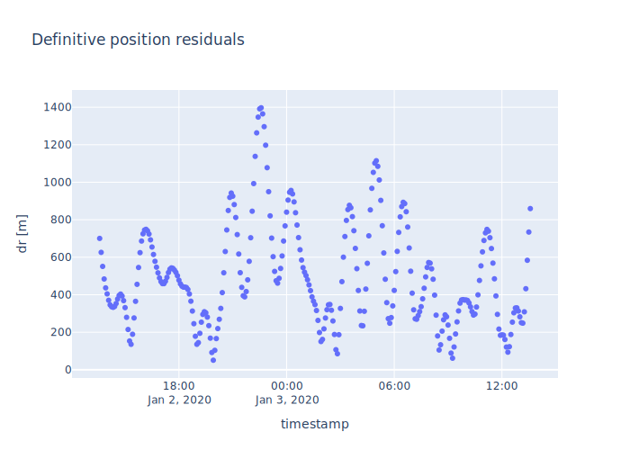
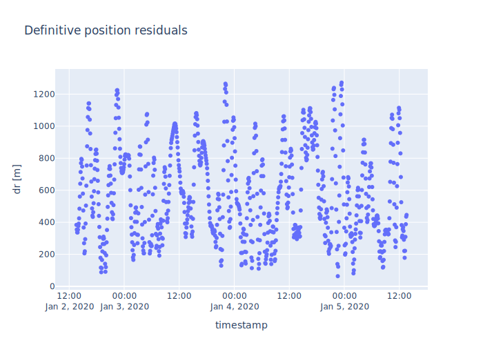

TLE Determination¶
In this notebook, we estimate a TLE based on an OPM, or an inital state.
import plotly.express as px
import numpy as np
from ostk.physics import Environment
from ostk.physics.coordinate import Frame
from ostk.physics.time import Interval
from ostk.physics.time import Instant
from ostk.physics.time import Duration
from ostk.physics.environment.object.celestial import Earth
from ostk.physics.environment.object.celestial import Moon
from ostk.physics.environment.object.celestial import Sun
from ostk.astrodynamics.estimator import TLESolver
from ostk.astrodynamics.trajectory import State
from ostk.astrodynamics.trajectory import Propagator
from ostk.astrodynamics.trajectory.orbit.message.spacex import OPM
from ostk.astrodynamics.solver import LeastSquaresSolver
from ostk.astrodynamics.converters import coerce_to_datetime
Setup environment¶
We setup an environment with Earth as the central celestial object
EGM96 10x10
No atmospheric drag
Third body perturbations from the Sun and the Moon
environment: Environment = Environment(
central_celestial_object=Earth.EGM96(10, 10),
objects=[Moon.default(), Sun.default()]
)
tle_solver: TLESolver = TLESolver(
solver=LeastSquaresSolver.default(),
satellite_number=99999,
revolution_number=1,
estimate_b_star=False,
)
Example from OPM¶
Dummy SpaceX OPM taken from OSTk Astrodynamics tests
opm: OPM = OPM.parse("""
# Dummy SpaceX OPM output
# Notes:
# - ECEF velocity is Earth relative
# - Apogee/Perigee altitude assumes a spherical Earth, 6378.137 km radius
# - Orbital elements are computed in an inertial frame realized by inertially
# freezing the WGS84 ECEF frame at time of current state
# - State is post-deployment, so includes separation delta-velocity
header:
generation_date: 2020-01-01T12:34:56.789Z
launch_date: 2020-01-02T12:34:56.789Z
deployments:
- name: satellite_a
sequence_number: 1
mission_time_s: 3600.0
date: 2020-01-02T13:34:56.789Z
r_ecef_m: [693289.644, 6876578.628, -133035.288]
v_ecef_m_per_s: [1305.783, 39.783, 7525.920]
mean_perigee_altitude_km: 526.768
mean_apogee_altitude_km: 568.430
mean_inclination_deg: 97.123
mean_argument_of_perigee_deg: -179.513
mean_longitude_ascending_node_deg: 85.057
mean_mean_anomaly_deg: 179.263
ballistic_coef_kg_per_m2: 47.55
- name: satellite_b
sequence_number: 2
mission_time_s: 7200.0
date: 2020-01-02T14:34:56.789Z
r_ecef_m: [699863.059, 6875647.517, -123777.595]
v_ecef_m_per_s: [1504.658, 6.705, 7538.669]
mean_perigee_altitude_km: 536.779
mean_apogee_altitude_km: 529.851
mean_inclination_deg: 97.124
mean_argument_of_perigee_deg: 136.875
mean_longitude_ascending_node_deg: 85.032
mean_mean_anomaly_deg: -127.164
ballistic_coef_kg_per_m2: 44.26
""")
deployment: OPM.Deployment = opm.get_deployment_with_name("satellite_a")
deployment_state: State = deployment.to_state().in_frame(Frame.GCRF())
Generate observations¶
Setup a propagator based on the environment
propagate for an interval from deployment time
propagator: Propagator = Propagator.default(environment=environment)
interval: Interval = Interval.closed(deployment.date, deployment.date + Duration.days(1.0))
instants: list[Instant] = interval.generate_grid(Duration.minutes(5.0))
observations: list[State] = propagator.calculate_states_at(deployment_state, instants)
Solve¶
Using the first observation as an initial guess, generate a TLE analysis with an estimated TLE
initial_guess_state: State = observations[0]
analysis: TLESolver.Analysis = tle_solver.estimate(
initial_guess=initial_guess_state,
observations=observations,
)
print(analysis)
-- Analysis ----------------------------------------------------------------------------------------
Estimated TLE - - - - - - - - - - - - - - - - - - - - - - - - - - - - - - - - - - - - - - - - -
-- Two-Line Elements -------------------------------------------------------------------------------
Line 1: 1 99999U 00001A 20002.56593506 .00000000 00000-0 00000-0 0 02
Line 2: 2 99999 96.0053 29.5295 0081092 211.9303 146.5718 15.27048789 15
- - - - - - - - - - - - - - - - - - - - - - - - - - - - - - - - - - - - - - - - - - - - - - - - - -
Satellite Name:
Satellite Number: 99999
Classification: U
International Designator: 00001A
Epoch: 2020-01-02 13:34:56.789.184 [UTC]
Mean Motion First Time Der. / 2: 0.0
Mean Motion Second Time Der. / 6: 0.0
B* Drag Term: 0.0
Ephemeris Type: 0
Element Set Number: 0
Inclination: 96.005300000000005 [deg]
Right Ascension of the Ascending Node : 29.529499999999999 [deg]
Eccentricity: 0.0081092000000000004
Argument of Periapsis: 211.93029999999999 [deg]
Mean Anomaly: 146.5718 [deg]
Mean Motion: 15.27048789 [rev/day]
Revolution Number at Epoch: 1
----------------------------------------------------------------------------------------------------
Analysis - - - - - - - - - - - - - - - - - - - - - - - - - - - - - - - - - - - - - - - - - - -
-- Least Squares Solver Analysis -------------------------------------------------------------------
RMS Error: 569.239
Iteration Count: 4
Termination Criteria: RMS Update Threshold
Estimated State - - - - - - - - - - - - - - - - - - - - - - - - - - - - - - - - - - - - - - - -
Instant: 2020-01-02 13:34:56.789 [UTC]
Frame: GCRF
INCLINATION [1.6756]
RAAN [0.5154]
ECCENTRICITY [0.0081]
AOP [-2.5843]
MEAN_ANOMALY [8.8413]
MEAN_MOTION [15.2705]
Steps - - - - - - - - - - - - - - - - - - - - - - - - - - - - - - - - - - - - - - - - - - - - -
RMS Error: 266537
X Hat: [0.0000, 0.0000, -0.0001, -0.0091, 0.0091, -0.0107]
RMS Error: 609.299
X Hat: [0.0000, -0.0000, 0.0000, -0.0002, 0.0003, 0.0000]
RMS Error: 569.234
X Hat: [-0.0000, 0.0000, -0.0000, 0.0000, -0.0000, -0.0000]
RMS Error: 569.239
X Hat: [0.0000, -0.0000, -0.0000, 0.0000, 0.0000, -0.0000]
----------------------------------------------------------------------------------------------------
----------------------------------------------------------------------------------------------------
----------------------------------------------------------------------------------------------------
residuals = analysis.solver_analysis.compute_residual_states(observations)
data = []
for residual in residuals:
data.append(
{
"timestamp": coerce_to_datetime(residual.get_instant()),
"dr [m]": np.linalg.norm(residual.get_position().get_coordinates()),
}
)
figure = px.scatter(data, x="timestamp", y="dr [m]", title="Definitive position residuals")
figure.show("svg")

Solve with B* estimation¶
Generate observations for a longer time interval, which is beneficial for B* estimation
tle_solver_with_b_star_estimation: TLESolver = TLESolver(
solver=LeastSquaresSolver.default(),
satellite_number=99999,
revolution_number=1,
estimate_b_star=True,
)
interval = Interval.closed(deployment.date, deployment.date + Duration.days(3.0))
instants = interval.generate_grid(Duration.minutes(5.0))
observations = propagator.calculate_states_at(deployment_state, instants)
We can use the previous TLE as an initial guess, or we can also provide a tuple of (State, B* guess)
analysis_with_b_star_estimation: TLESolver.Analysis = tle_solver_with_b_star_estimation.estimate(
initial_guess=(observations[0], 1e-4),
observations=observations,
)
print(analysis_with_b_star_estimation)
-- Analysis ----------------------------------------------------------------------------------------
Estimated TLE - - - - - - - - - - - - - - - - - - - - - - - - - - - - - - - - - - - - - - - - -
-- Two-Line Elements -------------------------------------------------------------------------------
Line 1: 1 99999U 00001A 20002.56593506 .00000000 00000-0 -10286-5 0 05
Line 2: 2 99999 96.0054 29.5295 0081229 211.8839 146.6208 15.27046805 13
- - - - - - - - - - - - - - - - - - - - - - - - - - - - - - - - - - - - - - - - - - - - - - - - - -
Satellite Name:
Satellite Number: 99999
Classification: U
International Designator: 00001A
Epoch: 2020-01-02 13:34:56.789.184 [UTC]
Mean Motion First Time Der. / 2: 0.0
Mean Motion Second Time Der. / 6: 0.0
B* Drag Term: -1.0286e-06
Ephemeris Type: 0
Element Set Number: 0
Inclination: 96.005399999999995 [deg]
Right Ascension of the Ascending Node : 29.529499999999999 [deg]
Eccentricity: 0.0081229000000000006
Argument of Periapsis: 211.88390000000001 [deg]
Mean Anomaly: 146.6208 [deg]
Mean Motion: 15.27046805 [rev/day]
Revolution Number at Epoch: 1
----------------------------------------------------------------------------------------------------
Analysis - - - - - - - - - - - - - - - - - - - - - - - - - - - - - - - - - - - - - - - - - - -
-- Least Squares Solver Analysis -------------------------------------------------------------------
RMS Error: 644.42
Iteration Count: 4
Termination Criteria: RMS Update Threshold
Estimated State - - - - - - - - - - - - - - - - - - - - - - - - - - - - - - - - - - - - - - - -
Instant: 2020-01-02 13:34:56.789 [UTC]
Frame: GCRF
INCLINATION [1.6756]
RAAN [0.5154]
ECCENTRICITY [0.0081]
AOP [-2.5851]
MEAN_ANOMALY [8.8422]
MEAN_MOTION [15.2705]
B_STAR [-0.0000]
Steps - - - - - - - - - - - - - - - - - - - - - - - - - - - - - - - - - - - - - - - - - - - - -
RMS Error: 804001
X Hat: [0.0000, 0.0000, -0.0000, -0.0094, 0.0094, -0.0107, -0.0001]
RMS Error: 3380.38
X Hat: [0.0000, -0.0000, -0.0000, -0.0008, 0.0008, 0.0000, 0.0000]
RMS Error: 644.374
X Hat: [-0.0000, 0.0000, 0.0000, -0.0000, 0.0000, 0.0000, -0.0000]
RMS Error: 644.42
X Hat: [-0.0000, 0.0000, -0.0000, 0.0000, 0.0000, 0.0000, -0.0000]
----------------------------------------------------------------------------------------------------
----------------------------------------------------------------------------------------------------
----------------------------------------------------------------------------------------------------
residuals = analysis_with_b_star_estimation.solver_analysis.compute_residual_states(observations)
data = []
for residual in residuals:
data.append(
{
"timestamp": coerce_to_datetime(residual.get_instant()),
"dr [m]": np.linalg.norm(residual.get_position().get_coordinates()),
}
)
figure = px.scatter(data, x="timestamp", y="dr [m]", title="Definitive position residuals")
figure.show("svg")
